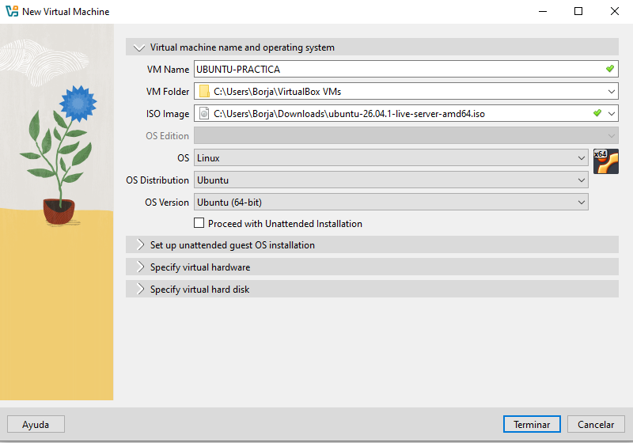
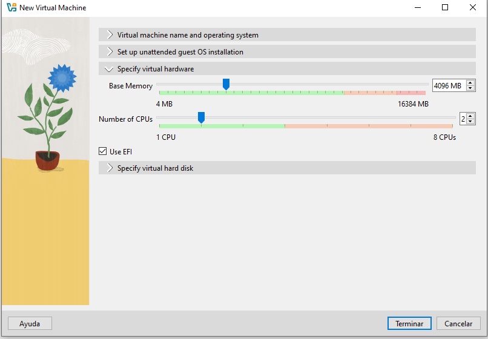
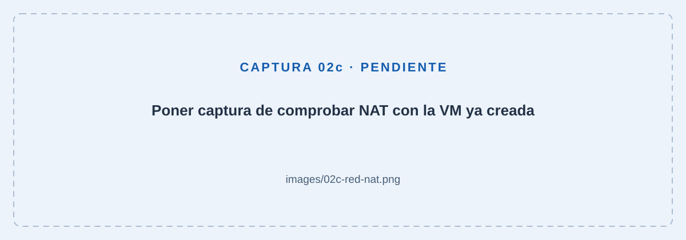
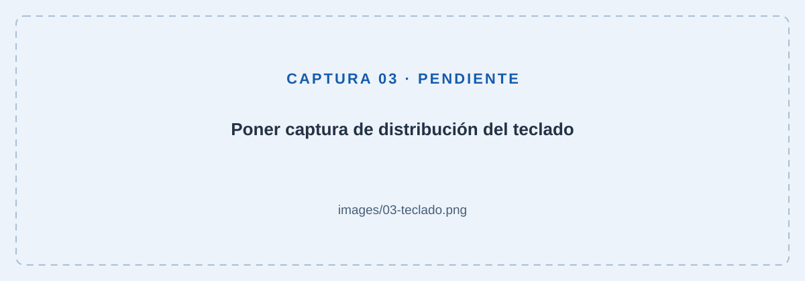
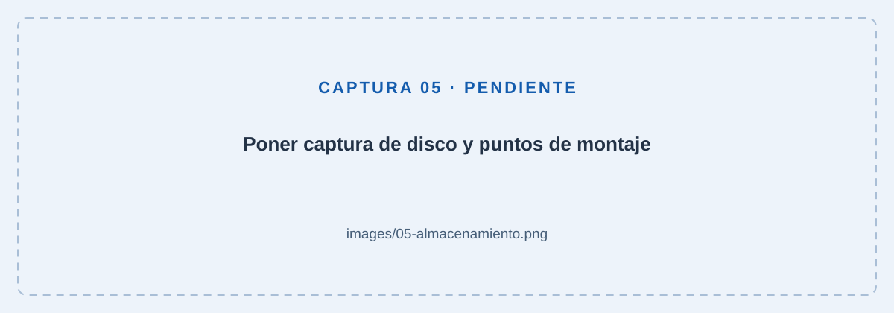
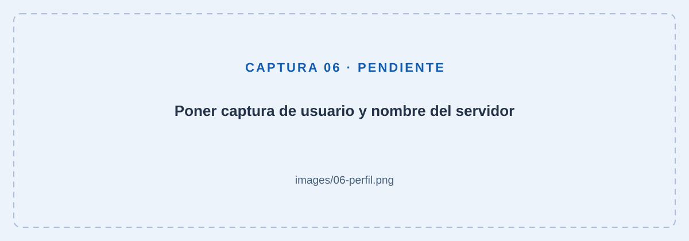
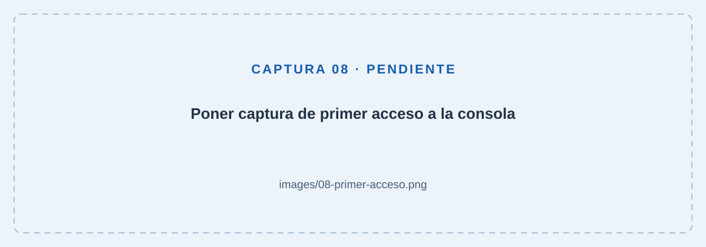
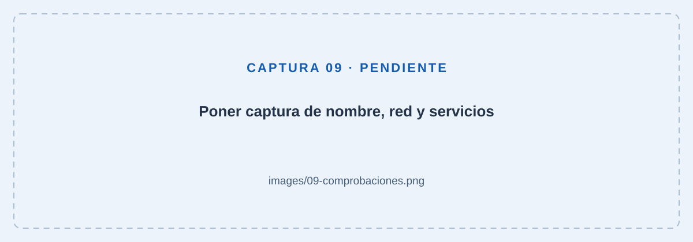

Ubuntu Server en VirtualBox
01 · Antes de empezar
Prepara el equipo y la ISO
En esta práctica instalarás Ubuntu Server 26.04 LTS en una máquina virtual nueva. Usaremos la ISO de servidor para Intel o AMD de 64 bits (amd64). El ordenador físico es el anfitrión y Ubuntu será el sistema invitado.
- Instala VirtualBox si aún no lo tienes. Abre la aplicación al terminar y reinicia el anfitrión si el instalador lo solicita.
- Comprueba que la virtualización Intel VT-x o AMD-V/SVM está activada en la BIOS/UEFI. En un anfitrión Windows puedes consultarlo en Administrador de tareas → Rendimiento → CPU → Virtualización.
- Abre la página oficial de descarga de Ubuntu Server. Descarga la ISO 26.04 LTS para Intel/AMD de 64 bits. Puede llevar un número de revisión, como 26.04.1. El nombre del archivo incluye
live-server-amd64.iso. - Guarda la ISO sin descomprimirla. Reserva al menos 25 GB libres en el anfitrión y suficiente RAM para ceder 4 GB a la VM sin dejar al ordenador sin memoria.
02 · El hardware virtual
Crea la máquina de la práctica
Configuraremos la máquina dentro del asistente de Nueva. No pulses Terminar hasta haber elegido la memoria, los procesadores y el tamaño del disco. Si estás en modo experto, despliega los apartados de hardware y disco en esa misma ventana; si el asistente muestra varias pantallas, avanza con Siguiente.
Paso 1. Nombre, ISO e instalación manual
- En VirtualBox pulsa Nueva. Escribe
UBUNTU-PRACTICAcomo nombre y elige una carpeta con espacio suficiente. Si ese nombre ya tiene una carpeta creada, utiliza otro, comoUBUNTU-PRACTICA-02. - Selecciona la ISO. Revisa el tipo Linux y la versión Ubuntu (64-bit), o el perfil específico de Ubuntu de 64 bits que ofrezca tu versión.
- Desactiva Instalación desatendida. Realizaremos los pasos del instalador a mano.

Paso 2. Elige el hardware y el disco antes de terminar
| Recurso | Valor para la práctica |
|---|---|
| RAM | 4096 MB (4 GB). No asignes más. |
| Procesadores | 2 CPU virtuales. |
| Disco | Un disco nuevo VDI de 25 GB, reservado dinámicamente. |
| Firmware | EFI/UEFI activado antes de instalar. Conserva ese modo después. |
- Sin salir del asistente, abre el apartado Hardware. En Memoria base, escribe 4096 MB (4 GB). En Procesadores, selecciona 2.
- Activa EFI / Usar EFI en ese apartado.

- Abre el apartado Disco duro y selecciona Crear un disco duro virtual ahora. En Tamaño del disco, introduce 25 GB. Este es el campo donde se elige la capacidad del disco.
- Selecciona VDI si aparece el selector de formato. Deja desmarcada Reservar tamaño completo / Pre-allocate Full Size para que el almacenamiento sea dinámico.

El VDI dinámico ocupa espacio a medida que guardas datos, hasta su límite. Los 25 GB son la capacidad del disco virtual; el anfitrión debe mantener espacio libre para que pueda crecer.
Revisa las opciones elegidas o la pantalla de resumen: ISO de Ubuntu Server, instalación manual, 4096 MB, 2 CPU, EFI y disco nuevo de 25 GB. Ahora sí, pulsa Terminar. VirtualBox montará la ISO seleccionada y creará el disco con esos valores.
Después de crear la máquina: comprueba la red NAT
La red se comprueba una vez creada la VM. NAT no aparece en el asistente inicial: VirtualBox la configura por defecto para que Ubuntu pueda salir a Internet a través del anfitrión.
- Selecciona la máquina apagada y abre Configuración → Red → Adaptador 1.
- Comprueba que Habilitar adaptador de red está marcado y que Conectar a muestra NAT. Si ya está así, déjalo como está.
- Comprueba también Cable conectado; despliega las opciones avanzadas si es necesario. Si corriges algún valor, guarda con Aceptar.

03 · Instalación manual
Sigue el asistente de Ubuntu Server
Algunas pantallas pueden cambiar de orden o conservar textos en inglés según la revisión de la ISO. Las opciones principales están descritas en la guía oficial del instalador.
Paso 3. Arranca y aprende a moverte
Pulsa Iniciar. En el menú de arranque de la ISO selecciona Try or Install Ubuntu Server y espera a que cargue el asistente.
Usa las flechas para recorrer opciones, Tab para cambiar de campo, Espacio para marcar casillas y Intro para confirmar. Normalmente avanzarás con Hecho / Done. Para liberar el teclado o el ratón, utiliza la tecla anfitrión indicada abajo en VirtualBox, normalmente Ctrl derecho en Windows. Controles del instalador.
Paso 4. Idioma, teclado y tipo de instalación
Selecciona Español si está disponible. Si la consola solo ofrece inglés, puedes continuar con los nombres ingleses de esta guía. Elige la distribución de teclado que utilizas, por ejemplo Spanish, y comprueba su variante.
Si ofrece actualizar el instalador, hazlo con conexión a Internet y espera a que se reabra.

Después del teclado: Choose the type of installation
- Mantén seleccionado Ubuntu Server. Incluye una selección de herramientas para administrar el servidor desde la consola, adecuada para esta práctica.
- Deja sin seleccionar Ubuntu Server (minimized). Reduce los paquetes instalados y está pensado para entornos donde apenas se inicia sesión de forma interactiva; para aprender y trabajar en la consola usaremos la opción estándar.
- Deja desmarcado Search for third-party drivers. En esta máquina virtual, Ubuntu ya incluye los controladores necesarios para el hardware virtual de VirtualBox. En un equipo físico puede ser útil activarla si algún componente necesita controladores adicionales del fabricante.
Con esas opciones, lleva el foco a Hecho con Tab o las flechas y pulsa Intro. La opción estándar sigue siendo Ubuntu Server sin escritorio gráfico.
Paso 5. Red, proxy y repositorio
- En Network configuration, mantén la configuración automática. En esta práctica, la interfaz
enp0s3muestra DHCPv410.0.2.15/24: ha recibido una dirección automáticamente del servicio DHCP de VirtualBox./24equivale a la máscara255.255.255.0. El nombre de la interfaz y la dirección pueden variar. Conserva también la configuración IPv6 que aparezca y no selecciones Create bond, cuya utilidad se explica debajo. Para esta instalación basta con una interfaz y DHCP; una IP fija se puede configurar en otra práctica. Selecciona Hecho y pulsa Intro. Tener una IP confirma la asignación de dirección, pero el acceso a Internet se comprobará al conectar con el repositorio. - Deja el proxy vacío salvo que el centro te haya proporcionado uno.
- En Ubuntu archive mirror configuration, conserva
http://archive.ubuntu.com/ubuntu/. Espera a que aparezca This mirror location passed tests, selecciona Hecho y pulsa Intro.
¿Qué es un mirror y qué comprueba esta pantalla?
Un repositorio contiene paquetes de software y sus índices: las listas de programas y versiones disponibles. Un mirror es un servidor que ofrece una copia de ese contenido. Ubuntu lo utiliza para descargar programas y actualizaciones sin tener que buscar instaladores por distintas páginas web.
Para esta práctica conservamos http://archive.ubuntu.com/ubuntu/, la dirección propuesta. Cambiarla tendría sentido si el centro indicara un servidor propio o si otro mirror oficial ofreciera mejor disponibilidad o velocidad. No hay que escribir aquí la IP de nuestra VM ni la puerta de enlace.
El mensaje This mirror location passed tests confirma que la prueba del repositorio ha terminado correctamente. En la captura se han descargado índices desde archive.ubuntu.com: ya hemos comprobado resolución del nombre y acceso a ese servidor, no solo la asignación de una IP. Esto no implica que todos los servicios de Internet sean accesibles.
Las líneas que empiezan por file:/cdrom corresponden a la ISO montada; las que muestran http://archive.ubuntu.com, al repositorio de red. Leyendo lista de paquetes indica que se están procesando los índices, no que se estén instalando todos esos programas. Una línea Ign aislada no significa por sí sola que la prueba haya fallado: fíjate en el resultado final.
Paso 6. Utiliza el disco virtual completo
- En Guided storage configuration, mantén seleccionado Use an entire disk y el disco VBOX_HARDDISK de 25.000G. Es el disco virtual creado para esta práctica.
- Desmarca Set up this disk as an LVM group: sitúate en la casilla con Tab o las flechas y pulsa Espacio para cambiar
[X]por[ ]. Deja sin marcar Encrypt the LVM group with LUKS y no selecciones Custom storage layout. - Pulsa Hecho para pasar al resumen. Debe existir una partición montada en
/y, con EFI, otra en/boot/efi. El instalador prepara las particiones automáticamente. - Pulsa Hecho / Done. Confirma Continuar / Continue en el aviso de escritura solo después de comprobar que el destino es el disco nuevo de esta VM.
Cómo leer el resumen de Storage configuration
Un punto de montaje es la ubicación del árbol de carpetas donde se hace accesible un sistema de archivos. En esta instalación aparecen dos particiones nuevas del disco VBOX_HARDDISK de 25.000G:
| Punto de montaje | Tamaño mostrado | Formato y función |
|---|---|---|
/ | 23.948G | ext4. Es la raíz del sistema: contiene Ubuntu, los programas, la configuración y, en este esquema, las carpetas de los usuarios. |
/boot/efi | 1.049G | FAT32, marcada como ESP (EFI System Partition). Guarda los archivos de arranque que utiliza el firmware UEFI para iniciar el sistema. |
Los tamaños pueden variar ligeramente según el instalador. La raíz ocupa menos de 25 GB porque parte del disco se reserva para EFI y una pequeña cantidad para la estructura y alineación de las particiones. Estos valores indican la capacidad asignada, no cuánto ocupa ya Ubuntu.
No available devices significa que no quedan dispositivos o espacio sin asignar disponibles para añadir al esquema: el disco ya aparece en Dispositivos utilizados. No significa que Ubuntu se haya quedado sin espacio libre para guardar archivos. Las opciones RAID y LVM desactivadas no son un error ni hacen falta para este reparto.
new y to be formatted indican las operaciones previstas al confirmar. Si el resumen coincide, pulsa Hecho y, en el aviso de borrado posterior, confirma Continuar tras comprobar de nuevo que se trata del disco virtual de esta práctica. Restablecer descarta el reparto propuesto; no lo pulses si quieres conservarlo.

Paso 7. Crea tu usuario
Para evitar confusiones con las credenciales, usaremos siempre usuario como nombre de usuario y contraseña en esta práctica. Completa Profile configuration así:
- Su nombre:
Usuario. Es el nombre descriptivo de la cuenta. - Your server’s name:
ubuntu-practica. Identifica el servidor; usamos minúsculas y un guion, sin espacios ni tildes. - Elija un nombre de usuario:
usuario. Es el identificador que escribirás para iniciar sesión. - Elija una contraseña:
usuario. - Confirme la contraseña:
usuario.
Este usuario podrá administrar el sistema con sudo, que solicitará la misma contraseña. El nombre de la VM en VirtualBox y el nombre del servidor dentro de Ubuntu son ajustes distintos. Una vez completados los campos, selecciona Hecho y pulsa Intro.

usuario y nombre del servidor ubuntu-practica.Paso 8. Servicios opcionales
Upgrade to Ubuntu Pro
Mantén seleccionado Skip for now (omitir por ahora), selecciona Continuar y pulsa Intro.
Ubuntu Pro es una suscripción opcional que amplía la cobertura de actualizaciones de seguridad y ofrece funciones adicionales para entornos profesionales. No la necesitamos para esta práctica. Omitirla no impide instalar programas ni recibir las actualizaciones incluidas en el mantenimiento estándar de Ubuntu LTS. Tampoco convierte la instalación en una versión de prueba. Puedes activarla más adelante si la necesitas.
SSH configuration
Deja desmarcado Instalar servidor OpenSSH, selecciona Hecho y pulsa Intro.
SSH (Secure Shell) permite iniciar sesión en el servidor desde otro ordenador a través de una conexión cifrada y ejecutar comandos. OpenSSH es el software que proporciona ese servicio. Es habitual en servidores reales, que se administran sin tener un monitor y un teclado conectados.
En esta práctica utilizamos directamente la consola de VirtualBox. Más adelante sí usaremos SSH, pero lo dejamos sin instalar ahora para aprender a instalarlo y configurarlo cuando toque: comprobar el servicio, preparar la conexión y acceder desde otro equipo. Es una decisión didáctica; instalarlo desde este asistente también sería válido. Omitir OpenSSH no afecta a la conexión a Internet, las actualizaciones ni el inicio de sesión local.
- Permitir autenticación con contraseña por SSH: permitiría entrar remotamente con el usuario y su contraseña. Aunque veas una X, la opción está atenuada porque no has seleccionado instalar el servidor OpenSSH; esa X no significa que ya haya acceso remoto habilitado. La contraseña
usuariode esta práctica no debe utilizarse para exponer un servicio SSH. - Import SSH key: permite incorporar una clave pública autorizada para iniciar sesión. El equipo desde el que te conectas conserva la clave privada correspondiente, que no se comparte. Este método evita enviar la contraseña de la cuenta para autenticarse.
- No authorized key: indica que no has añadido ninguna clave pública. Es normal en esta práctica y no impide iniciar sesión en la consola.
Instalar OpenSSH por sí solo tampoco configura el acceso desde el anfitrión a una VM con NAT: para una futura práctica habría que preparar la conectividad, por ejemplo mediante reenvío de puertos.
Featured server snaps
Deja todas las casillas [ ] sin marcar. Lleva el foco a Hecho con Tab o las flechas y pulsa Intro. La fila resaltada solo indica dónde está el foco: una aplicación se selecciona con Espacio y su casilla pasa a mostrar [X]. Intro sobre una aplicación abre sus detalles.
Los snaps son un formato de paquetes de software. Esta pantalla ofrece aplicaciones adicionales para servidores; no son componentes obligatorios para instalar Ubuntu Server. Por ejemplo, Nextcloud permite ofrecer servicios de nube y archivos, MicroK8s proporciona Kubernetes para gestionar aplicaciones en contenedores y Prometheus sirve para monitorizar sistemas y recoger métricas.
Partiremos de una instalación básica y añadiremos cada servicio cuando corresponda, aprendiendo a instalarlo, configurarlo y comprobarlo. Así evitamos descargas, consumo de disco y servicios que todavía no necesitamos. No seleccionar ninguno no impide usar Ubuntu ni instalarlos más adelante; esta lista tampoco incluye todo el software disponible.
Paso 9. Finaliza y retira la ISO
Cuando aparezca Instalando el sistema, Ubuntu ya se está instalando. Las líneas de texto muestran el registro de las tareas que realiza: copiar archivos, instalar paquetes y configurar el sistema. Ahora toca tener paciencia: puede tardar varios minutos según el equipo y la conexión. No tienes que escribir nada; no apagues ni reinicies la VM durante este proceso. Espera a que el instalador indique que ha terminado y ofrezca reiniciar.
Espera a que termine la instalación y pulsa Reiniciar ahora / Reboot Now. Cuando solicite retirar el medio, usa Dispositivos → Unidades ópticas → Retirar disco de la unidad virtual en VirtualBox. Después pulsa Intro dentro de la VM.
Si no permite retirar la ISO, espera a que finalice la instalación y llegue a ese aviso; entonces apaga la VM y retírala desde Configuración → Almacenamiento. Conserva conectado el VDI y vuelve a iniciar.
04 · Primer arranque
Inicia sesión y actualiza
Paso 10. Entra en la consola
Espera a que aparezca ubuntu-practica login:. Escribe usuario y pulsa Intro. Introduce la contraseña: no aparecerán letras ni asteriscos mientras escribes. Es normal.
Tras entrar verás un indicador parecido a usuario@ubuntu-practica:~$. Si los mensajes del primer arranque ocultan el inicio de sesión, espera a que terminen y pulsa Intro.

Paso 11. Instala las actualizaciones
Ejecuta estos comandos uno a uno dentro de Ubuntu. Escribe solo el comando, sin copiar el indicador $.
sudo apt update
sudo apt upgradeapt gestiona paquetes: update actualiza la lista de paquetes disponibles y upgrade instala actualizaciones de los paquetes instalados. Revisa el resumen y confirma con la letra que indique el mensaje (S o Y). Espera a que termine antes de ejecutar:
sudo rebootreboot, sin opciones adicionales, reinicia el sistema.
Vuelve a iniciar sesión después del reinicio. Para el uso básico de esta consola no necesitas instalar Guest Additions ni un escritorio.
05 · Pequeñas comprobaciones
Comprueba que todo va bien
Ejecuta cada bloque por separado y compara el resultado. Si usaste otro usuario o nombre de servidor, verás tus propios valores.
1. Sistema y nombre del equipo
cat /etc/os-release
hostnamecat muestra el contenido de un archivo; /etc/os-release es el archivo con la identificación de Ubuntu. hostname, sin argumentos, muestra el nombre del equipo.
Esperado: Ubuntu 26.04 LTS (puede incluir un número de revisión) y ubuntu-practica como nombre de equipo.
2. Usuario y permisos de administración
whoami
sudo whoamiwhoami muestra el usuario con cuyos permisos se ejecuta la orden; no lleva opciones. Al anteponer sudo, se ejecuta como administrador.
Esperado: el primer comando devuelve usuario y el segundo root. Esto confirma que tu usuario puede ejecutar una orden con permisos de administrador.
3. RAM, procesadores y disco
free -h
nproc
lsblk -o NAME,SIZE,FSTYPE,MOUNTPOINTS
df -h /freemuestra el uso de RAM y memoria de intercambio;-hpresenta las cantidades en unidades legibles, como MiB y GiB.nproc, sin opciones, muestra cuántas unidades de procesamiento están disponibles para el proceso.lsblklista discos y particiones;-oelige las columnas:NAME,SIZE,FSTYPE,MOUNTPOINTSson nombre, tamaño, sistema de archivos y puntos de montaje.dfmuestra espacio ocupado y libre de los sistemas de archivos; aquí-htambién usa unidades legibles y/limita la consulta al sistema de archivos que contiene la raíz.
Esperado: memoria total cercana a 4 GiB, normalmente algo inferior por la memoria reservada, y 2 CPU disponibles. En lsblk debe aparecer el disco de unos 25 GB y sus particiones. df muestra el espacio libre de /; su tamaño será menor que el del disco completo.
4. Dirección IP y puerta de enlace
ip -br address
ip routeip consulta o configura la red: address muestra interfaces y direcciones, y -br resume la salida. route muestra las rutas, es decir, por dónde se envía el tráfico; default via identifica la puerta de enlace para destinos sin una ruta más específica.
Esperado: una interfaz Ethernet, a menudo enp0s3, con IPv4 y una ruta que empieza por default via. Con el NAT predeterminado suelen ser 10.0.2.15 y 10.0.2.2.
Loopback (lo) es la interfaz que permite al equipo comunicarse consigo mismo: 127.0.0.1 en IPv4 y ::1 en IPv6 apuntan al propio equipo, así que verlas no demuestra que haya conexión a Internet.
¿Para qué sirve? Por ejemplo, permite probar un servidor web desde el mismo equipo usando http://127.0.0.1, o que una aplicación se conecte a una base de datos instalada en ese servidor. Si un servicio escucha únicamente en loopback, no acepta conexiones directas desde otros equipos por la red. Funciona aunque no haya conexión a Internet. En esta práctica, 127.0.0.1 dentro de Ubuntu apunta a la VM; en el anfitrión apunta al anfitrión, no a Ubuntu.
5. DNS y acceso a los repositorios
getent ahosts archive.ubuntu.com
sudo apt updategetent consulta las fuentes de información configuradas en el sistema; ahosts pide direcciones de red y archive.ubuntu.com es el nombre que queremos resolver.
Esperado: el primer comando devuelve direcciones IP; el segundo descarga o consulta los índices sin errores de resolución ni conexión. Si algunos índices fallan, no des la prueba por superada aunque apt conserve listas antiguas. No es necesario que funcione un ping para que funcionen las descargas.
6. Servicios del sistema y hora
systemctl --failed
timedatectlsystemctl consulta o administra unidades de systemd, como los servicios; --failed muestra las que han fallado. timedatectl, sin argumentos, muestra la fecha, la hora, la zona horaria y el estado de sincronización.
Esperado: ningún servicio en estado fallido y una fecha/hora correcta, con sincronización activa una vez haya conexión. UTC puede ser una zona horaria válida en un servidor. Si aparece un servicio fallido, consulta systemctl status nombre-del-servicio: status muestra su estado y mensajes recientes; sustituye nombre-del-servicio por el nombre real. Si se abre una vista paginada, pulsa q para salir.
Para ordenar la salida antes de comprobar el sistema, puedes ejecutar clear: limpia la pantalla de la terminal sin borrar archivos y no necesita opciones.

Paso 12. Guarda el punto de partida
- Comprueba que la unidad óptica virtual está vacía. Reinicia con
sudo rebooty confirma que puedes entrar de nuevo sin la ISO. - Apaga correctamente el invitado con
sudo poweroff(poweroffapaga el sistema, sin opciones adicionales) y espera a que VirtualBox indique Apagada. - En la vista Instantáneas de VirtualBox, toma una llamada
01-instalacion-limpia. Describe la versión instalada y la fecha.
La instantánea permite recuperar el punto inicial en futuras prácticas. No sustituye una copia de seguridad independiente.
Lista final
Marca lo que hayas comprobado. Las marcas son temporales y no se guardan entre visitas.
06 · Si algo no encaja
Problemas habituales
Vuelve al instalador o no encuentra un sistema de arranque
Tras finalizar la instalación, retira la ISO y conserva conectado el VDI. Comprueba que no has cambiado EFI desde la instalación. Si aún no has instalado Ubuntu, la ISO debe estar montada para poder iniciar el asistente.
No se ve la contraseña o indica que no es correcta
La consola no muestra caracteres mientras escribes contraseñas. Escríbela y pulsa Intro. Si la rechaza, revisa Bloq Mayús y la distribución del teclado. Inicia sesión con el nombre de usuario, no con el nombre completo del perfil.
Solo aparece una pantalla de texto
Es el resultado esperado de Ubuntu Server. Cuando veas login:, inicia sesión. Al aparecer el indicador de comandos ya puedes realizar las comprobaciones.
No obtiene IP o falla el repositorio
Comprueba Internet en el anfitrión y revisa que el adaptador de la VM está en NAT con Cable conectado. En el instalador, revisa DHCP, el proxy y la prueba del mirror. Después de instalar, utiliza ip -br address, ip route y la comprobación DNS para localizar el fallo.
apt indica que otro proceso mantiene el bloqueo
Puede haber una actualización automática en curso. Espera a que termine y vuelve a intentarlo. No borres los archivos de bloqueo ni interrumpas el gestor de paquetes durante una actualización.
No puedo conectar por SSH desde el anfitrión
Esta práctica utiliza la consola de VirtualBox y no instala OpenSSH. Para una práctica posterior de acceso remoto habrá que instalar y configurar el servicio y, si se conserva NAT, preparar una regla de reenvío de puertos. No es un fallo de esta instalación.